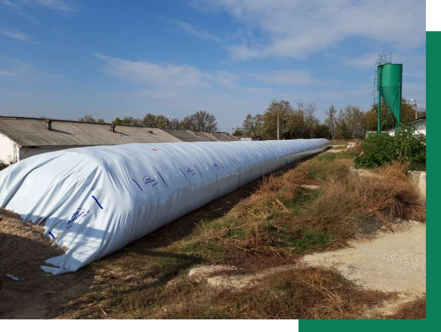
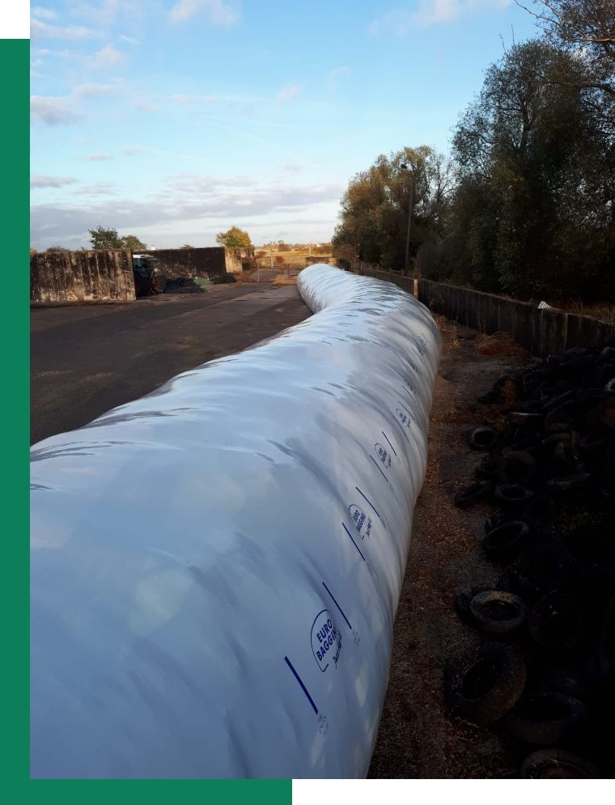

Silobags
SiloBag-urile sunt produse din polietilenă elastică. Aceștia sunt
fabricați din materii prime de ultimă generație existente la nivel
mondial.
Un SiloBag este varianta sigură, rapidă și ieftină pentru
depozitarea cerealelor.


De ce să alegi un SiloBag?
• Extinderea rapidă a spațiilor de depozitare îl transformă în
soluția optimă pentru recoltele mari sau pentru blocajele din port.
• Depozitarea la locul de producție. Stochează cerealele și furajele
la ferma ta, acolo unde sunt produse și elimini terții.
• Nu necesită autorizații de construcție sau ISU.
• Păstrează calitatea și culoarea cerealelor.
• Prelevarea facilă a boabelor cu sonda convențională pentru
verificarea calității acestora.
• Previne creșterea temperaturii.
• Asigură conservarea anaerobă și protecția termică a cerealelor.
• Rezistă la temperaturi extreme, de la -20 C până la +55 C
• Nu necesită gazare.
• Reduce costurile de transport față de cele din perioada de vârf de
colectare.
Notă:
| preț: |
525,00 euro/buc. |
650,00 euro/buc. |
| lungime: |
60,00 m |
75,00 m |
| diametru: |
2,75 m (9 feet) |
2,75 m (9 feet) |
| capacitate: |
200,00 tone (apox.) |
250,00 tone (aprox.) |